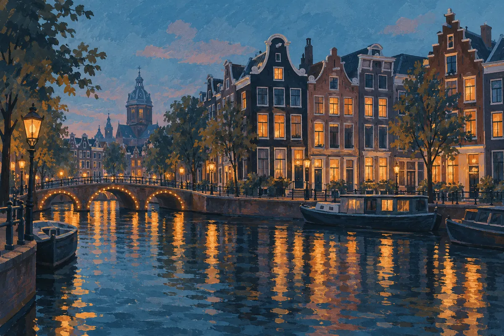

Voor uw aankomst
Weten waar u aan toe bent
Vraag naar het kamertype, de totale prijs, in- en uitchecktijden en de annuleringsvoorwaarden. Controleer ook bereikbaarheid en eventuele toegankelijkheidsbehoeften.
Amsterdam / verblijf & avond
Een verblijf begint bij rust. Een casinobezoek begint bij een bewuste keuze.
Dit ontwerp gebruikt de aangeleverde naam Tooropstraat Amsterdam. Een hotel met een fysiek casino op het opgegeven adres is nog niet vastgesteld.
Bekijk de praktische informatie
Het verblijf
Een prettige keuze vraagt om heldere informatie. Controleer eerst of de accommodatie, de kamer en de voorwaarden bij uw plannen passen.
Voor uw aankomst
Vraag naar het kamertype, de totale prijs, in- en uitchecktijden en de annuleringsvoorwaarden. Controleer ook bereikbaarheid en eventuele toegankelijkheidsbehoeften.
Uw eigen ritme
Een hotelovernachting bewijst geen toegang tot een casino. De aanbieder van het verblijf en het casino kunnen ieder hun eigen voorwaarden en controles hanteren.
Voor dit concept zijn nog geen kamers, faciliteiten, prijzen of beschikbaarheid bevestigd. Dit concept bevat daarom nog geen concreet verblijfsaanbod.
Bewust een avond kiezen
Gokken kan geld kosten en verslavend zijn. Het is geen manier om inkomen te verdienen of financiële problemen op te lossen.
Lees over verantwoord spelenDe algemene Nederlandse leeftijdsgrens is 18 jaar. Regels en toelating van het beoogde casino zijn nog niet vastgesteld. Deze grens maakt het hotel niet automatisch alleen voor volwassenen.
Bepaal vooraf hoeveel tijd en geld u kunt missen.
Neem pauzes. Stop als een afgesproken grens is bereikt.
Probeer verliezen niet terug te winnen en leen geen geld om te gokken.
Wat kost gokken jou? Stop op tijd. 18+
Praten helpt. Bekijk OpenOverGokkenVoor u vertrekt
Locatie uit de briefing · niet bevestigd als hotel
Jan Tooropstraat 164ADit is het aangeleverde locatieadres. Het juridische adres van de uitgever staat afzonderlijk onderaan de pagina. Dit concept geeft geen route- of aankomstinstructie voor een bevestigd hotel.
Vraag de exacte hotelnaam, het bevestigde adres en een rechtstreeks contact met de aanbieder voordat u een verblijf plant.
Een casino in dezelfde stad is geen casino in het hotel. De locatie en relatie met de accommodatie moeten duidelijk zijn.
Vraag afzonderlijk naar toelating, identiteitscontrole en openingstijden van het daadwerkelijke casino. Voor dit concept zijn deze gegevens niet beschikbaar.
Veelgestelde vragen
Nee. Dit is een ontwerpconcept. Er zijn geen bevestigde kamers, prijzen of boekingskoppelingen. Een bericht aan de uitgever is een informatievraag en geen reservering.
Dat is nog niet bevestigd. De naam en het adres komen uit de briefing. De aanwezigheid van een fysiek casino op deze locatie mag nog niet als feit worden gepresenteerd.
Een officiële relatie met Holland Casino is niet vastgesteld. De genoemde uitgever is AdFox Holding OÜ. Het e-mailadres op deze pagina is niet bevestigd als reserveringsadres van een hotel of als officieel Holland Casino-kanaal.
In Nederland is deelname aan kansspelen alleen toegestaan vanaf 18 jaar. Voor het beoogde, nog niet bevestigde casino kunnen aanvullende toegangsvoorwaarden gelden. Dit zegt niets over een leeftijdsgrens voor hotelovernachtingen.
Uw eigen e-mailprogramma kan een nieuw bericht openen. U bepaalt of u dat bericht verzendt. De website verzendt niets automatisch en geeft geen boekingsbevestiging.
OpenOverGokken biedt informatie en anoniem contact. De gratis Nederlandse hulplijn is 0800 24 000 22, dag en nacht bereikbaar. Bekijk ook onze pagina over verantwoord spelen.
Naar de hulplijnen van OpenOverGokkenContact met de uitgever
Het contactadres uit de briefing is bedoeld voor vragen aan de uitgever van dit concept. De relatie van de uitgever met de accommodatie en het casino is nog niet vastgesteld.
hcamsterdam@gmail.comGeen automatische verzending, betaling of boeking. Deel geen paspoortgegevens, financiële gegevens of informatie over uw gokgedrag. Lees het privacybeleid voordat u contact opneemt.